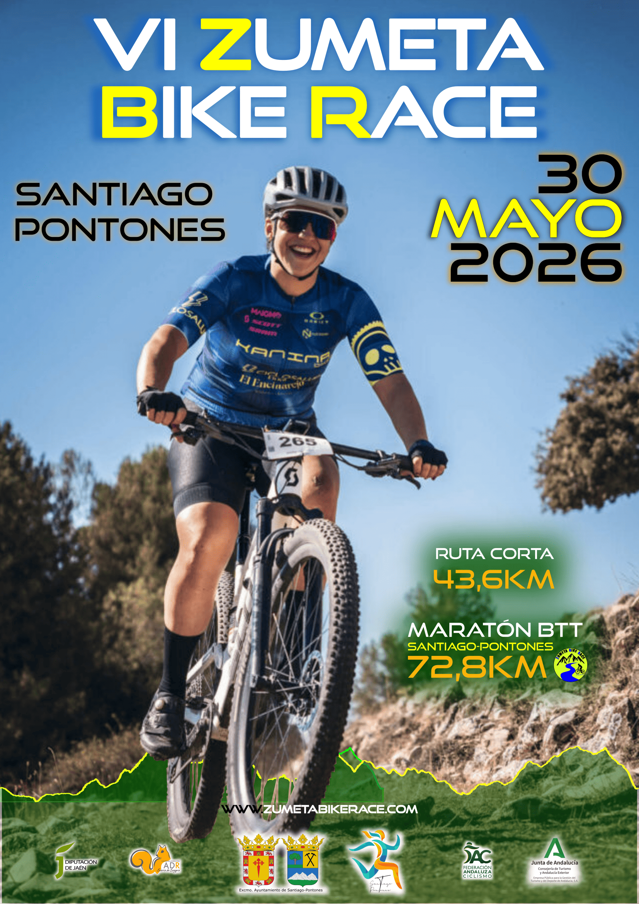
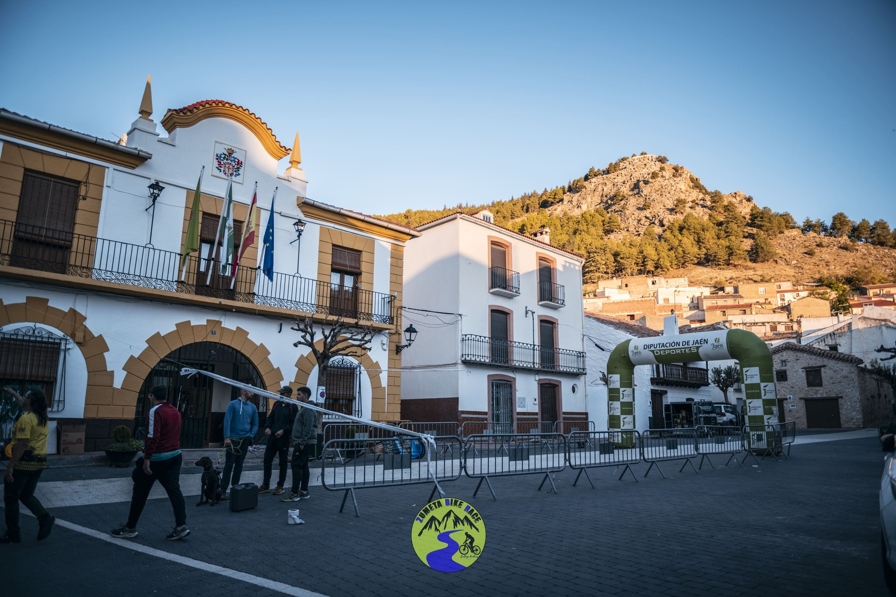
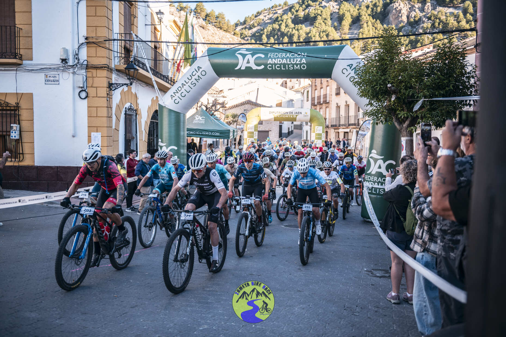
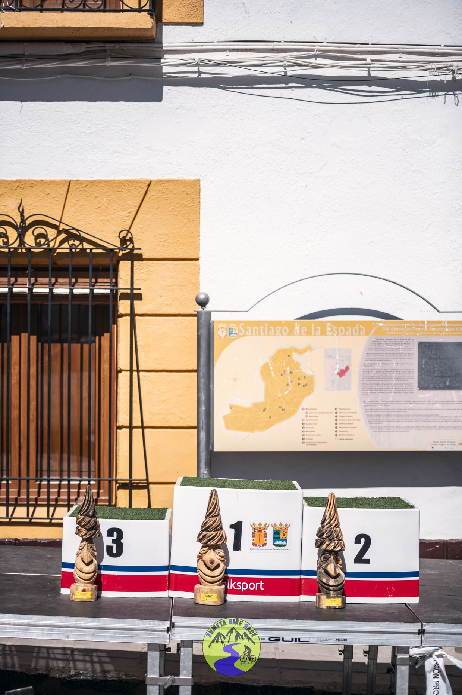

VI Zumeta Bike Race
30 de mayo de 2026
El espectacular entorno de Santiago-Pontones, en el límite natural con Castilla La Mancha en la zona oriental de la provincia, será el nuevo reto que afronten los bikers jiennenses. Esta edición de la VI Zumeta Bike Race, que se llevará a cabo el sábado 30 de mayo a partir de las 9:30h en el núcleo de población de Santiago de la Espada. Es una prueba puntuable de un apasionante Circuito Provincial de Jaén BTT Maratón 2026. La organización volverá a correr cargo del ayuntamiento local, con cinco exitosas ediciones a sus espaldas que hacen de ella una de las pruebas de referencia del calendario de Jaén, con presencia año tras año de corredores de las provincias y comunidades autónomas cercanas.
La carrera contará con dos recorridos adaptados a diferentes niveles: una ruta corta de 44 km y una ruta larga de 73 km, para los más experimentados, atravesando los paisajes más emblemáticos de nuestro municipio.
La propuesta este año es un recorrido de 73km que en primer lugar llevará a los corredores en dirección suroeste hacia los Campos de Hernán Perea, girando en El Cerezo para cambiar hacia el norte para afrontar la subida a Eras de Pedro Blázquez. Posteriormente, en el km37, habrá un desvió para aquellos que elijan la ruta corta. Los valientes que afronten el trazado competitivo se enfrentarán por su lado a dificultades como el Collado Los Ruejos, Puerto de Marchena o Patio de la Calabaza con Las Cruces como cota máxima con sus 1732msnm, para finalmente encarar el descenso hasta la meta de Santiago Pontones.
Para poder participar en este evento es necesario la inscripción. Actualmente el precio de inscripción es de 35€ para federados y 45€ no federados, no pudiéndose llevar a cabo in situ el día de la carrera.

Galería de imágenes de ediciones pasadas



Comentarios
María Gómez - 25 de mayo de 2025
¡Qué ganas de participar este año! El recorrido de la edición anterior fue espectacular.
Juan Pérez - 16 de febrero de 2026
¿Dónde podemos hacer la inscripción oficial? ¿Habrá puntos de avituallamiento?